Asignaturas
-
Matematicas
-
Español
-
Ingles
-
Estadistica
-
Geometria
-
Naturales
-
Sociales
-
Competencias ciudadanas
-
Tecnologia
-
Artistica
-
Religion
-
Etica
-
Edu. Fisica
|
Asignaturas favoritas
|
¡perdido entre libros!
¡Descubre nuevos mundos entre las hojas de un libro
Aqui te ayudaremos a encontrar un libro que deseas, segun tu edad, tu genero de preferencia, libros que has leido o que te hallan gustado. los libros mas vendidos y mas leidos.
Reseñas y sinopsis de Libros juveniles
*El piso mil
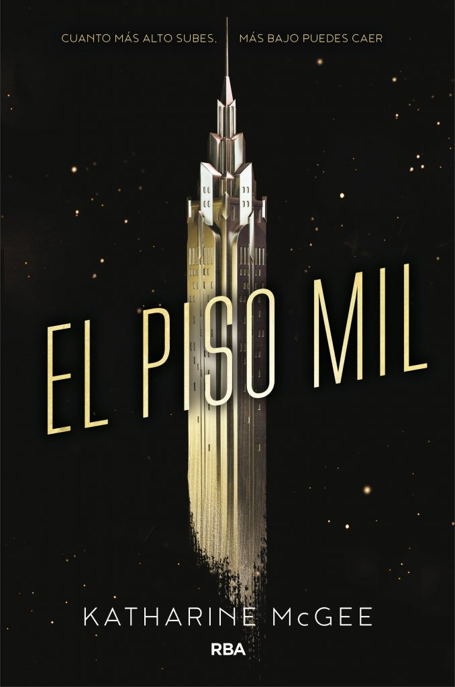
Año 2118. Una súper torre de 1000 plantas se alza sobre Manhattan. Una sociedad en sí misma, cuyas plantas superiores están habitadas por familias inmensamente ricas, mientras que en las plantas inferiores subsisten las familias de clase trabajadora. La caída de una joven desde la planta mil, desatará la controversia y desvelará las escandalosas vidas tanto de los habitantes más ricos de las zonas altas como las de las zonas bajas.
Primero llegó Crepúsculo. Después, Los Juegos del Hambre. Más tarde, Divergente. Ahora, La Quinta Ola. Prepárate para el nuevo fenómeno.... ¡El piso mil! intriga, realismo, ficción, sospechas, lujos, tramas…<
>
*Por trece razones
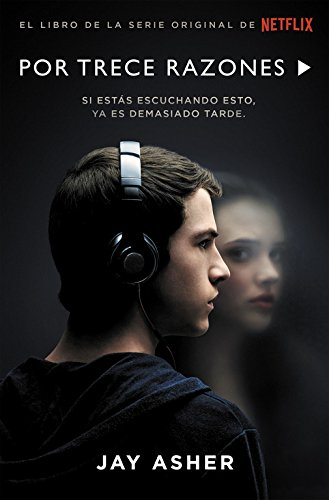
Por Trece Razones nos cuenta la historia de Hannah Baker y Clay Jensen, que mediante unos casetes cuenta la historia de su vida. Este libro nos narra una historia triste, conmovedora, injusta, realista, y aunque no lo mostrara muy a menudo, también hay algo de valentía. La trama tiene como protagonista a Hannah quien; a través de siete casetes, expone a trece personas diciéndoles lo que han hecho, cada una de ellas, para que recurriera al suicidio. Sin embargo, todo esto lo sabemos cuándo Clay; un chico que estaba enamorado de ella; recibe las cintas. Al escuchar siquiera la primera cinta él comprende que es uno de los motivos por lo que la protagonista se suicida, pese a eso él no sabe es lo que ha hecho ni porque está ahí; solo que debe escucharlas, ir hacia los lugares marcados en un mapa, y al finalizar entregarlos a la siguiente persona en la cinta.
Así, a modo de audio, e intercalado con la narración de Clay, iremos conociendo la historia de Hannah, sus amistades y amores, sus sentimientos, pensamientos y acciones; lo que los demás han hecho, dicho o pensado sobre ella, y las consecuencias de ello, las diversas circunstancias que la han llevado a tomar esa decisión.
>
*Las mascaras de la muerte
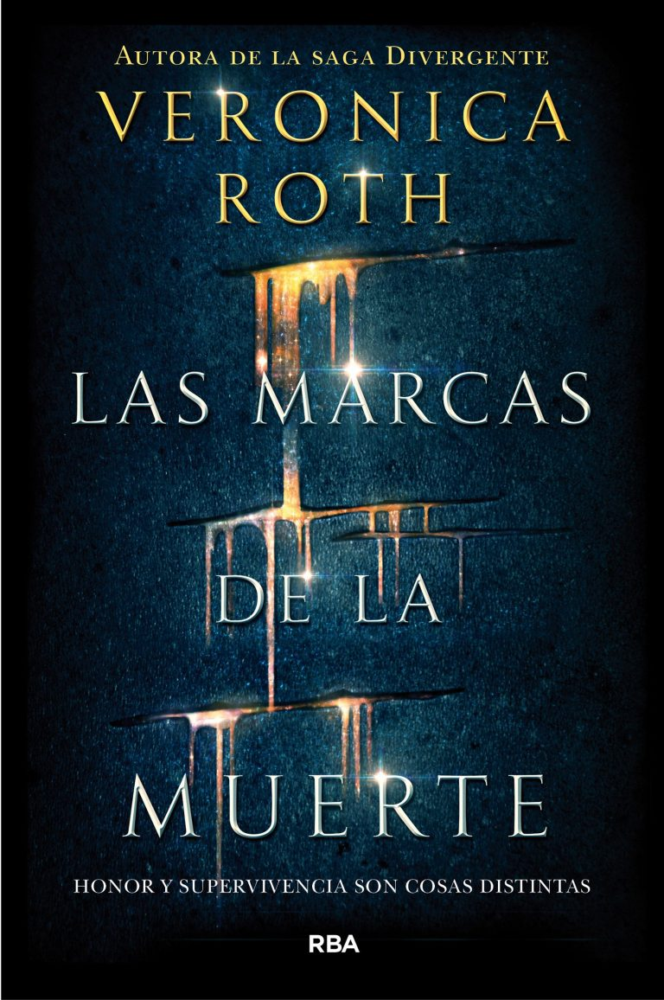
Hay dones que pueden convertirse en maldiciones y hay maldiciones que pueden liberar a todo el universo El don de la joven Cyra consiste en provocar dolor, el mismo dolor atroz que ella siente en todo momento. El don de Akos le hace inmune a los dones de los demás, pero ¿bastará para salvar a su familia y a sí mismo de un destino tan injusto como cruel? En un universo en guerra, los dones de CYRA y AKOS hacen que sean vulnerables, peones en manos de quienes quieren aprovecharse de su poder. Su única esperanza reside en unir sus fuerzas para luchar contra la injusticia y… Convertir el dolor en poder. La desconfianza en lealtad. El amor en ansia de libertad.
>
*Un monstruo viene a verme
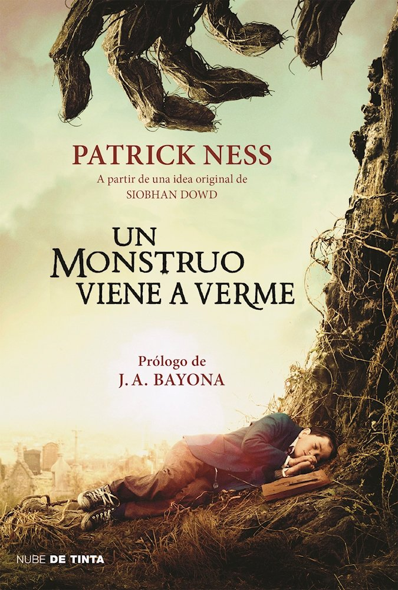
Un cuento precioso, sobre lo mucho que cuesta dejar que las personas que queremos se vayan, sobre cómo nos aferramos a la esperanza hasta el último momento, cuando nos topamos sin remedio con lo inevitable, cuando no nos queda más remedio que admitir la verdad, esa que hemos estado ocultándonos incluso a nosotros mismos. Valiente y hermoso, lleno de compasión, Un monstruo viene a verme funde lo doloroso y lo intSiete minutos después de la medianoche, Conor despierta y se encuentra un monstruo en la ventana. Pero no es el monstruo que él esperaba, el de la pesadilla que tiene casi todas las noches desde que su madre empezó el arduo e incansable tratamiento. No, este monstruo es algo diferente, antiguo… Y quiere lo más peligroso de todo: la verdad. Maliciosa, divertida y conmovedora, Un monstruo viene a verme nos habla de nuestra dificultad para aceptar la pérdida y de los lazos frágiles, pero extraordinariamente poderosos que nos unen a la vida.
>
*Soy una adolecente: nadie es perfecto
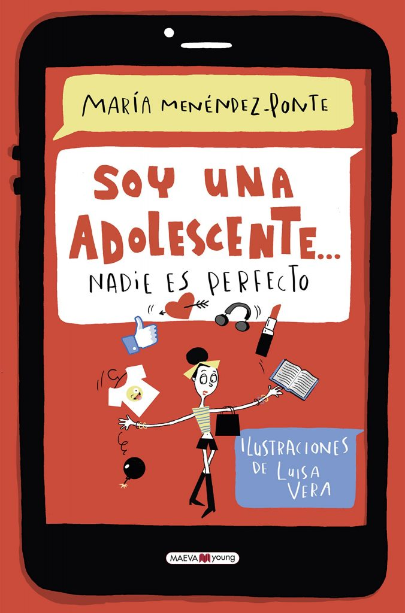
En este libro encontrarás 31 conflictos en boca de adolescentes, con viñetas humorísticas que te harán reflexionar, una sección de consejos y experiencias, “Mejor con brújula”, y una semblanza de mujeres relevantes que han vivido esos conflictos o tienen que ver con ellos.Sin duda alguna, la adolescencia es la etapa más compleja y apasionante de la vida, pero es también la edad en la que puedes llegar a sentirte más perdida, como si vivieras en tierra de nadie. De golpe, te ves atrapada en un cuerpo en continuo proceso de cambio. Es como si vieras una película en la que suceden multitud de cosas a un mismo tiempo que no están dentro de ningún guión y que a menudo te superan. Pero también es la etapa delos descubrimientos y los retos.
>
*La ultima lagrima
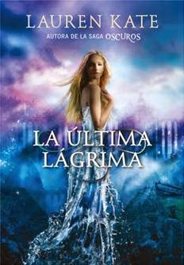
Una sola lágrima de amor puede cambiar el mundo…
Existe una antigua leyenda, hoy casi olvidada, que habla de una joven cuyas lágrimas de desamor hundieron un continente entero. Ahora Eureka tiene en sus manos un libro que cuenta esa fascinante historia: lo ha heredado de su madre, que desapareció arrollada por una ola gigantesca. Poco a poco, a través de sus páginas, descubrirá que las coincidencias entre su vida y la leyenda son demasiadas para ser fruto del azar... Además, la inesperada llegada de Ander, el extraño chico de ojos turquesa que huele a mar y sabe todo sobre ella, le enseñará que las casualidades raramente existen y que su llanto tiene un poder tan inmenso que puede incluso cambiar el curso de la humanidad.
*Atlantida

Con el destino del mundo en sus manos, Eureka debe renunciar a todo, pero... ¿Podrá renunciar al amor? Solo Eureka puede detener a Atlas, el poderoso y cruel rey de la Atlántida, pero antes deberá aprender a luchar. Junto con Cat y el atractivo y misterioso Ander, atravesará el océano para encontrar a Solon, el único que puede enseñarles cómo derrotar a Atlas. Mientras Eureka trata de asumir la destrucción que ella misma ha traído al mundo y planea cómo enfrentarse a Atlas, se le revela un secreto absolutamente devastador. Si es lo bastante fuerte, Eureka podría usar este descubrimiento para derrotar al rey de la Atlántida..., a no ser que, en realidad, él y su reino se aprovechen de su corazón roto.
*Te esperare
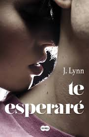
Hay cosas que vale la pena esperar Cameron Hamilton es un metro noventa de irresistible atractivo completado con un par de imponentes ojos azules y una increíble capacidad para hacer que Avery desee cosas que creía que le habían sido arrebatadas para siempre. Sabe que tendría que mantenerlo lejos, pero Cam parece tropezarse con ella en cada esquina del campus. Con su encanto, sus bromas… y ese maldito hoyuelo que aparece cuando sonríe.Hay cosas que vale la pena probar.Lo último que aguardaba Avery en su nueva vida universitaria era atraer la atención del único chaval que puede hacer pedazos el débil futuro que está procurando edificar. Mas ignorar la tensión candente que brota entre ellos —y que saca un lado de Avery que ni tan siquiera sabía que existía— es imposible.Y hay cosas por las que vale la pena batallar
Avery deberá enfrentarse a su pasado si desea olvidar. Mas cuando la verdad salga a la luz ¿va a poder proseguir contando con Cam?
*Nerve
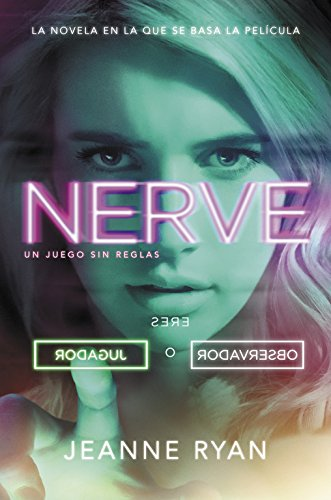
Cuando lo que más deseas está a tu alcance, ¿qué serías capaz de hacer para conseguirlo?
Vee es una chica que no destaca demasiado, así que cuando es elegida para concursar en NERVE, un juego anónimo de retos que se retransmite online, decide probar suerte. Pronto descubre que el juego sabe cosas de ella: la tienta con los premios que más desea y la empareja con Ian, su chico ideal.
Al principio todo es genial: los fans de Vee y de Ian los animan mientras ellos superan retos cada vez más arriesgados. Pero el juego da un giro inesperado cuando los mandan a una localización secreta con cinco jugadores más. De repente descubren que están jugando a todo o nada y apostando sus propias vidas a cada momento.
¿Hasta dónde será Vee capaz de llegar?
*Fijate en mi
Cuatro historias de amor. Cuatro amigas que, por encima de todo, ansían que alguien se fije en ellas. Andrea busca el amor, Mila ya lo tiene, Lali espera que el suyo vuelva e Irene lo ve demasiado lejano. Cuando las chicas del grupo de las Nubes menos se lo esperan, aparece el Duendo, capaz de hacer realidad sus sueños. Su manera de concebir la vida, la amistad y el amor está a punto de cambiar. ¿Como van a encajarlo todo?
¿Quién dijo que solo hay una manera de estar enamorada?
*Enlazadas
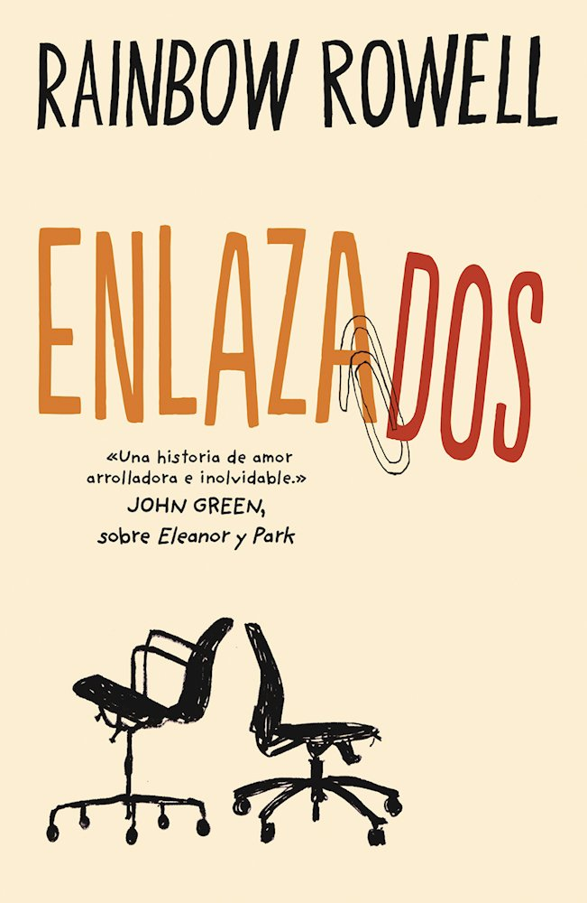
«Hola, soy el tío que lee tus mensajes y, por cierto, me he enamorado de ti…»
Beth y Jennifer trabajan en el departamento de redacción de un periódico. Son inteligentes, divertidas y muy buenas amigas, y suelen escribirse correos en los que discuten aspectos de sus vidas personales, pero lo que no saben es que un compañero de trabajo también los está leyendo.Lincoln O’Neill es el tipo que lee los correos. Ese es su trabajo en la empresa. Debería haberlas advertido la primera vez que transgredieron las normas, pero las dos parecen tan majas… Le gustan, le gustan mucho, sobre todo Beth.
¿Podrías enamorarte de alguien a quien no has visto nunca?
Landon: Todo por ti
Cuando Landon, el mejor amigo de Tessa y hermanastro de Hardin, decide abandonar su Washington natal para ir en busca de nuevas aventuras en Nueva York, cree que su vida no puede ser más perfecta: compartirá apartamento con Tessa; vivirá, por fi n, en la misma ciudad que
Dakota, su novia desd
ños; conocerá a gente nueva… Pero el destino a veces es caprichoso y tiene sus propios planes, y quizás no todo salga como tenía previsto…
Descubre la nueva vida de Landon, sus aventuras al lado de Tessa y las sorpresas que le esperan a su corazón.
*Eleanor y park
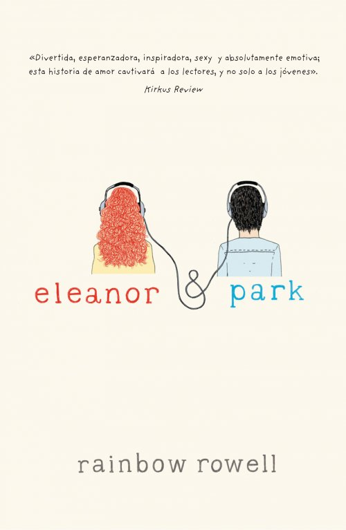
Eleanor es nueva en el instituto; su vida familiar es un desastre; con su intenso pelo rojo, su extraña y poco conjuntada forma de vestir no podría llamar más la atención, aunque lo intentase. Park es un chico mitad coreano; su vida familiar es tranquila; no es exactamente popular, pero con sus camisetas negras, sus cascos y sus libros ha conseguido ser invisible. Todo empieza cuando Park accede a que Eleanor se siente a su lado en el autobús del instituto el primer día de clase. Al principio ni siquiera se hablan, pero poco a poco comparten sus hobbies y empiezan una relación de amistad... para terminar enamorándose de la forma en que te enamoras la primera vez, cuando eres joven, y sientes que no tienes nada y todo que perder.
fangirl
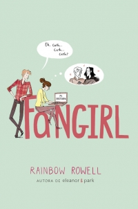
Cath y Wren son gemelas idénticas, y hasta hace poco lo hacían absolutamente todo juntas. Ahora están a la universidad. Wren le ha dejado claro que no piensa compartir habitación con ella. Para Wren es una oportunidad única de empezar de cero y conocer gente. Para Cath no es tan fácil. Es terriblemente tímida. Su único mundo es ser fan de Simon Snow, donde ella se siente a gusto, donde siempre sabe exactamente qué decir y donde puede escribir un romance mucho más intenso que cualquier cosa que haya experimentado en la vida real. Sin Wren, Cath se siente completamente sola, fuera de su zona de confort. Tiene una compañera de cuarto antipática, siempre acompañada de su atractivo novio, un profesor de escritura que piensa que el fan fiction es el fin del mundo civilizado, un guapo compañero de clase, que sólo quiere hablar de palabras... Y además no puede dejar de preocuparse por su padre, que es amoroso y frágil y nunca ha estado realmente solo. Ahora Cath tiene que decidir si está dispuesta a abrir su corazón a los nuevos amigos y a las nuevas experiencias, y se está dando cuenta de que hay mucho más que aprender sobre el amor de lo que nunca creyó posible.
Morire besando a simon snow
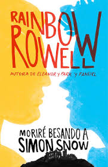
Simon Snow es el mago más poderoso del mundo, tiene diecisiete años y es el Elegido, el único que puede salvar su mundo. La verdad: Simon es el peor Elegido que nadie podría haber elegido. Al menos eso es lo que dice Baz, su némesis. Y Baz será malvado y un vampiro y gilipollas, pero aquí tiene razón. La mayor parte del tiempo, Simon ni siquiera puede controlar su magia, ¿y tiene que salvar el mundo?
La pura verdad
En casi todos los aspectos de la vida, Mark es un chico normal como tantos otros. Tiene un perro llamado Beau y una amiga que se llama Jessie. Le gusta hacer fotos y escribir haikus. Sueña con escalar una montaña algún día. Pero en una faceta muy importante, Mark es diferente a los chicos de su edad: está enfermo. El tipo de dolencia que implica hospitales y tratamientos. Una enfermedad de la que podría no curarse. De modo que Mark decide escapar. Abandona su casa llevando una cámara, un cuaderno, y a su perro. Pase lo que pase, tiene un objetivo: alcanzar la cima del monte Rainer. Aunque sea lo último que haga en su vida...
Las ventajas de ser invisible
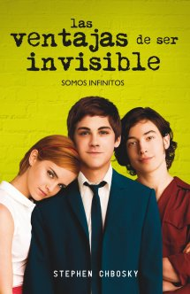
Vivir al margen ofrece, una perspectiva única. Pero siempre llega el momento, de entrar en escena y ver, el mundo desde dentro., Charlie es un chico realmente especial: lee muchísimo, no sale con amigos ni con chicas y reflexiona sobre el mundo desde un punto de vista muy particular. Su ingenuidad, su incapacidad para relacionarse normalmente y su extrema sinceridad le crean más de un problema, especialmente ahora que su único amigo ha muerto. Conocer a Sam y Patrick, los chicos más populares e interesantes del instituto, provocará un giro radical en su vida que lo sumergirá de pleno en la adolescencia. Charlie, un chico ingenuo, mordaz y solitario, acaba de empezar el instituto. Vive con sus padres, su popular hermana y un hermano mayor que está a punto de comenzar la universidad. La cosa no pinta demasiado bien el primer día de instituto cuando solo consigue hacer un amigo: un alternativo profesor de Lengua interesado en despertar el genio creativo de Charlie. Cuando conoce a la bella Sam y el excéntrico Patrick, unos chicos llenos de ganas de exprimir la vida al máximo, empieza a comprender lo que es crecer y hacerse adulto. Junto a ellos recorrerá caminos nuevos e inesperados: descubrirá música nueva, comenzará a salir de fiesta… e incluso se enamorará por primera vez.
El teorema de katherin
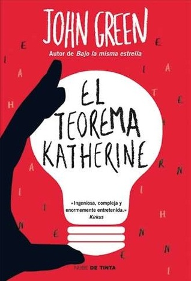
Cuando se trata de relaciones, el tipo de Colin Singleton son las chicas de nombre Katherine. Y cuando se trata de chicas llamadas Katherines, Colin siempre es al que lo botan. Diecinueve veces, para ser exactos. Él es un niño prodigio con diez mil dolares en el bolsillo, una pasión por los anagramas y un amigo con exceso de peso y obsesionado con la jueza Judy. Colin esta en una misión para probar El Teorema de Previsibilidad Subyacente de Katherines, que logrará predecir el futuro de todas las relaciones, transformándolo de un prodigio desvanecido a un verdadero genio y finalmente le podrá ganar a la chica. Dejar a un lado las expectativas y al amor entrar son parte de la divertidísima búsqueda de Colin de su pieza faltante y de la venganza de los botados de todas partes.